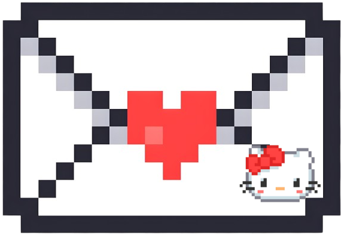
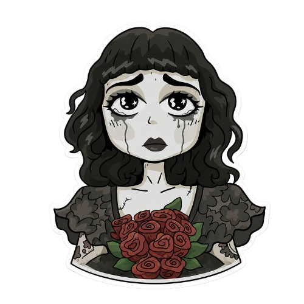
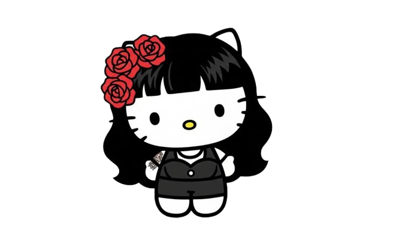

Estes triste
Tengas un mal día
Estes aburrida
Sea tu cumple
Me extrañes
Quieras reirte
Tengas miedo al futuro
Estes enojada
Dudes de ti
Estes eneferma
Secreta
Hola,
Supongo que si estás leyendo esto es porque hoy fue uno de esos días difíciles. Sea lo que sea que haya pasado, no estás sola. Tenés personas que te quieren y confían en vos, tus amigas, tu mamá, gente que está ahí aunque a veces no lo parezca
La vida puede ser muy mala, lo sé. Pero también puede ser muy buena, y la misma vos que hoy está leyendo esto es la prueba de eso. Te acordás cuando me decías que no querías ir de mañana a la UTU porque no conocías a nadie y tenías miedo? Y sin embargo fuiste, y acá estás, con amigas con las que tenés una confianza increíble. En lo malo siempre hay algo lindo escondido, por mínimo que sea
Hoy capaz no tenés ganas de nada, y está totalmente bien. Tampoco te voy a decir que te levantes y sonrías falsamente. Tomate el tiempo que necesitás, pero volvé, porque el mundo está mejor con vos funcionando. "No haga caso en lo que digan, no quieren que florezca", y vos vas a florecer igual
Sos valiente, más de lo que creés. Sos fuerte aunque seas muy sensible, y es lo que te hace ser vos. "No vas a caer", Anto. Y tu sonrisa es de las que contagian y matan de lo perfecta que es
No sé cuánto puede hacer una carta, pero si en algún momento necesitás hablar con alguien, buscame, o buscá a quien sea de confianza. Hablarlo siempre ayuda, aunque sea un poco
Ánimos, Anto!!!!!! Te quiero 3 millones!!!

